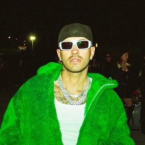
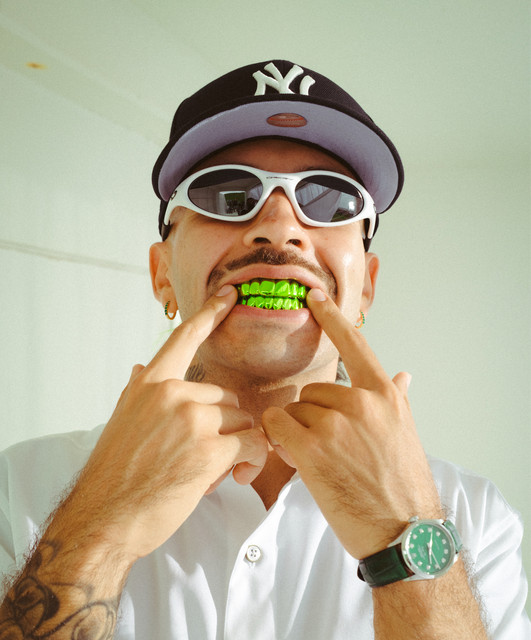

Ferxxo, también conocido como Feid, es un cantante colombiano de reguetón y pop latino que ha ganado gran popularidad en los últimos años por su estilo único y colaboraciones exitosas. Perfil general de Ferxxo (Feid) - Nombre real: Salomón Villada Hoyos - Fecha de nacimiento: 19 de agosto de 1992 - Lugar de origen: Medellín, Colombia - Alias artístico: Feid o Ferxxo - Géneros musicales: Reguetón, pop latino, R&B latino - Instrumento principal: Voz (tenor) - Discográfica: Universal Music Latino - Educación: Universidad de Antioquia - Años activo: Desde 2010 Estilo y presencia - Es conocido por su look característico: siempre usa gafas y suele vestir de color verde, lo que se ha convertido en parte de su identidad visual. - Su nombre artístico, Feid, representa la palabra "fe", como símbolo de confianza en sí mismo y en Dios. Éxitos y colaboraciones - Ha trabajado con artistas como J Balvin, Nicky Jam, Reykon, Wolfine y Alberto Stylee. - Algunas de sus canciones más populares incluyen: - “Feliz cumpleaños Ferxxo” - “Hey, mor” - “Le pido a Dios” - “Yandel 150” Reconocimientos - En 2024, ganó el Premio Grammy Latino a la mejor interpretación de reguetón, consolidando su posición como uno de los artistas más influyentes del género
  Historia sobre el FERXOO Discografia Del FERXOO